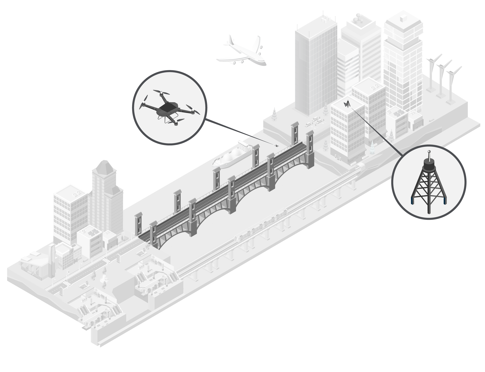
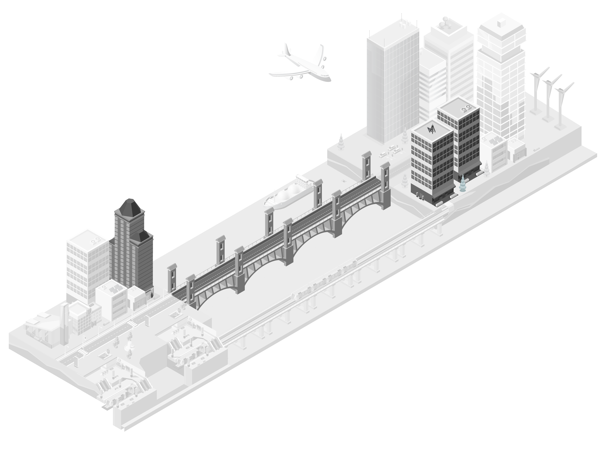
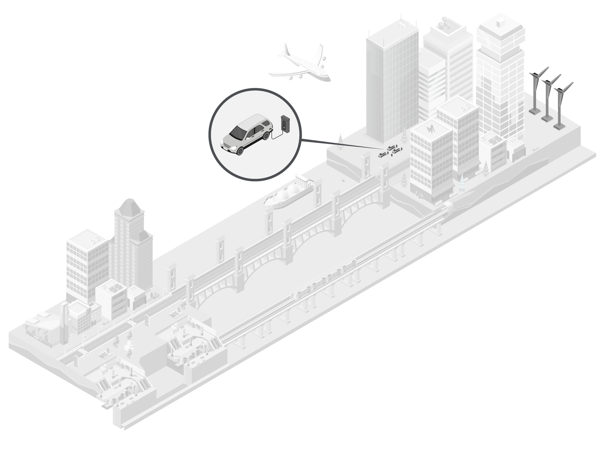

Beyond Traditional Infrastructure
Supplementing With Private Capital
Considerations for Private Companies
Moving Toward Smart Cities

The sheer volume of the work is going to provide the opportunity for more technology to come into construction.”
—Tariq Taherbhai, COO, Global Construction and Infrastructure, Aon
Moving Toward Smart Cities
Beyond Traditional Infrastructure
Supplementing With Private Capital
Considerations for Private Companies
Moving Toward Smart Cities
Beyond Traditional Infrastructure
Supplementing With Private Capital
Considerations for Private Companies
Moving Toward Smart Cities
Beyond Traditional Infrastructure
Beyond roads, bridges, rails and ports, the U.S. infrastructure bill aims to improve access to clean drinking water, increase the availability of high-speed broadband, improve airports, upgrade power infrastructure and address climate change through such measures as an expanded network of electric vehicle charging stations.

Supplementing With Private Capital
Much of that infrastructure funding could be supplemented by private capital. While there’s typically private capital available for commercial infrastructure developments such as oil and gas projects, the new U.S. infrastructure act offers a rare opportunity to mobilize private capital in support of public projects. The bill acknowledges that some governments might lack the ability to assess possible private sector partnerships effectively, so the plan sets funds aside to assist them with that process.
Considerations for Private Companies
Has the local government conducted a proper feasibility study and decided on a public-private partnership only after considering all possible approaches?
For private companies considering partnering with local governments in infrastructure projects, there are several important considerations.

Click each category to learn more
Is there genuine local support for the project?
Does the government have the necessary expertise on its own staff or have they hired the appropriate advisors to be involved in a public-private partnership?
Are there local champions for the project, such as a governor, mayor or some other official willing to put the necessary political capital behind the P3s, if there is controversy or resistance to the project?
The consensus is that the bill is definitely going to help shore up and advance our infrastructure. It’s going to provide consistent sustainable funding to local governments that do the bulk of infrastructure development in the U.S.”
—Tariq Taherbhai, COO, Global Construction and Infrastructure, Aon
With this bill you can get some public funds and leverage private capital to add to that. There’s lots of private capital looking for a home in infrastructure projects.”
— Tariq Taherbhai, COO, Global Construction and Infrastructure, Aon
The involvement of public-private partnerships in upcoming infrastructure improvements may lead to a greater role for embedded technology in developments and accelerate the move to smart cities. P3s will also accelerate the use of technology in infrastructure in cases where the private sector is responsible for maintaining the assets. Sensors, drones and other technologies can monitor the status of various types of infrastructure, make inspections more efficient and improve the upkeep of infrastructure assets.
Select each category to learn more
Beyond traditional infrastructure
Supplementing with private
capital
Considerations
for private companies
Moving toward smart cities
Beyond traditional infrastructure
Beyond roads, bridges, rails and ports, the U.S. infrastructure bill aims to improve access to clean drinking water, increase the availability of high-speed broadband, improve airports, upgrade power infrastructure and address climate change through such measures as an expanded network of electric vehicle charging stations.
The consensus is that the bill is
definitely going to help shore up and advance our infrastructure. It’s going
to provide consistent sustainable funding to local governments that do
the bulk of infrastructure development
in the U.S.”
—Tariq Taherbhai
Select each category to learn more
Supplementing with private capital
Much of that infrastructure funding could be supplemented by private capital. While there’s typically private capital available for commercial infrastructure developments such as oil and gas projects, the new U.S. infrastructure act offers a rare opportunity to mobilize private capital in support of public projects. The bill acknowledges that some governments might lack the ability to assess possible private sector partnerships effectively, so the plan sets funds aside to assist them with that process.
With this bill you can get some public funds and leverage private capital
to add to that. There’s lots of private
capital looking for a home in infrastructure projects.”
—Tariq Taherbhai
Select each category to learn more
Considerations for private companies
For private companies considering partnering with local governments in infrastructure projects, there are several important considerations.
Select each category to learn more
For private companies considering partnering with local governments in infrastructure projects, there are several important considerations.
Has the local government conducted a proper feasibility study and decided on a public-private partnership only after considering all possible approaches?
Is there genuine local support for the project?
Does the government have the necessary expertise on its own staff to be involved in a public-private partnership?
Moving toward smart cities
The involvement of public-private partnerships in upcoming infrastructure improvements may lead to a greater role for embedded technology in developments and accelerate the move to smart cities. P3s will also accelerate the use of technology in infrastructure in cases where the private sector is responsible for maintaining the assets. Sensors, drones and other technologies can monitor the status of various types of infrastructure, make inspections more efficient and improve the upkeep of infrastructure assets.
The sheer volume of the work
is going to provide the opportunity for more technology to come
into construction.”
—Tariq Taherbhai
Select each category to learn more